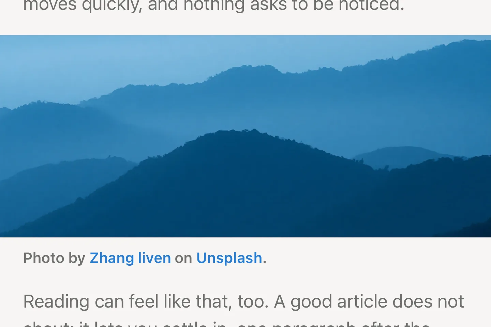
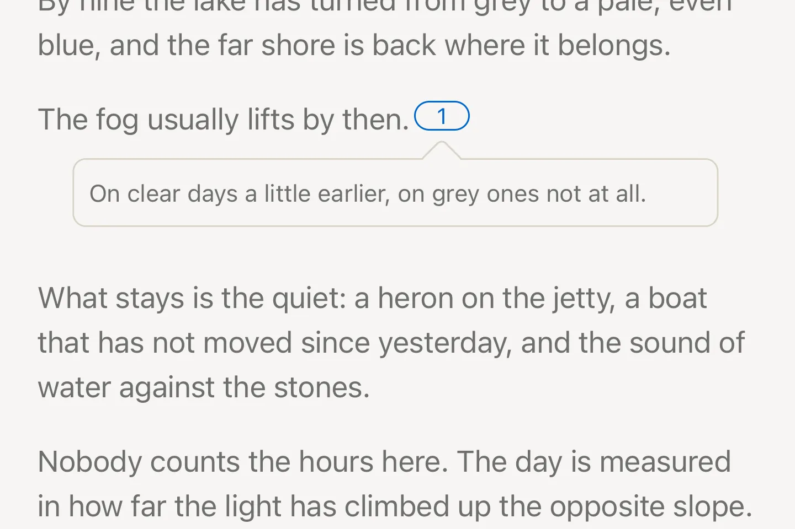
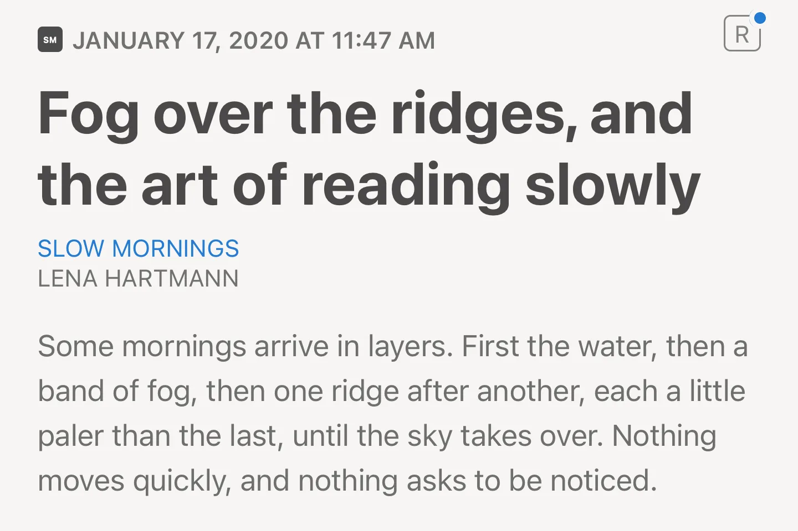
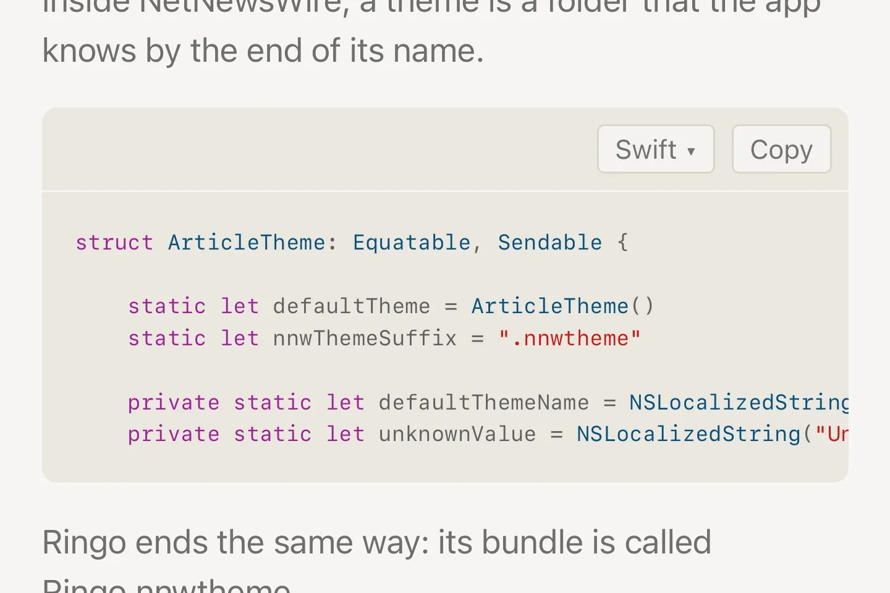
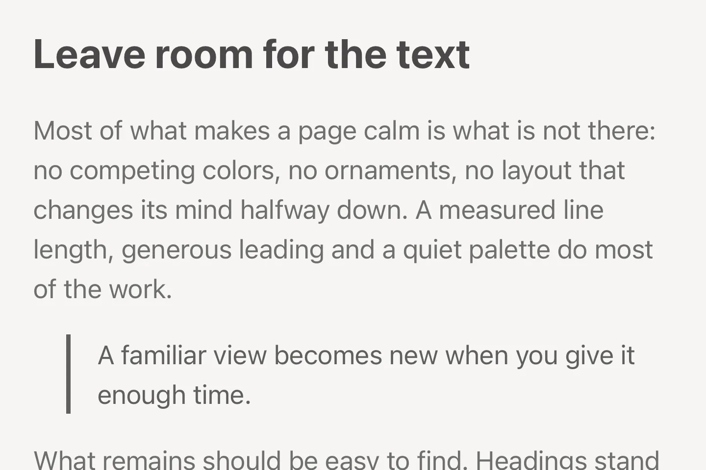
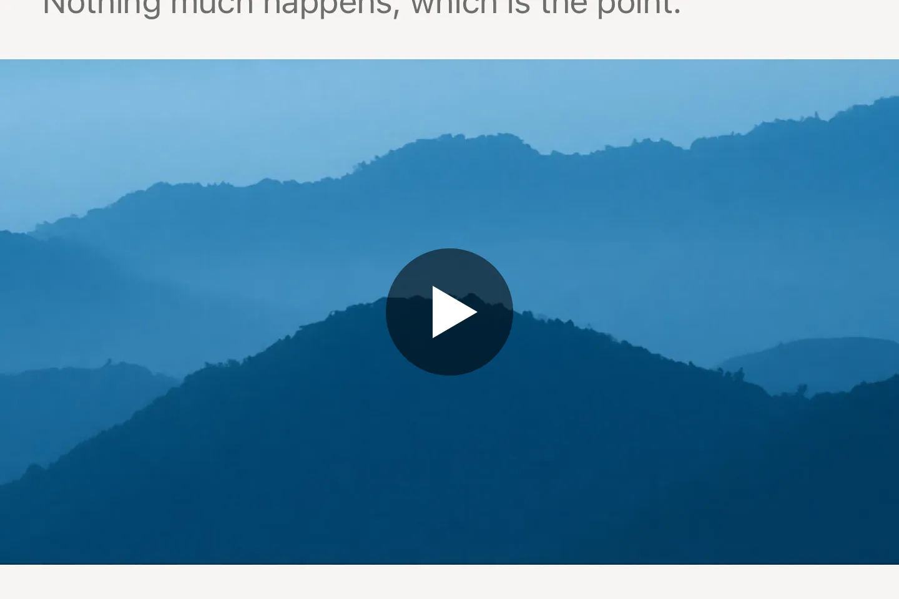

Made for reading
-

Images across the full width
Photos and figures break out of the text column: into the margins on the Mac, from edge to edge on iPhone.
-

Footnotes in place
Footnotes from common blogs and newsletters open in a popover next to their marker instead of jumping to the end of the article.
-

A blue dot for updates
When a new version of the Ringo theme is out, a blue dot appears on the R in the article header. Its settings install the update.
-

Colored code
Code blocks are colored by their language, with a menu to pick another one and a button that copies the code.
-

Native fonts and colors
San Francisco in the text size you chose, in colors that follow light and dark mode and meet the WCAG contrast ratio.
-

Embedded videos
YouTube, Vimeo and other players fill the column at 16:9 instead of keeping a small fixed size.